Button Generation
instead of hard coding butons i generate buttons then bind data to them such as position data and candy data
new button functionThis is my largest project yet including a sqlite database for storing information a Point of Service system for buying candy. a manager view to edit items within the database such as candy categories discounts and user information.a profile system where the user can access their own personal information edit and use points earned by spending cash to get borders for their profiles or generate pre-set discounts.
Github repository for users with access to it Loki's Candy Manager Repo
This view is used to facilitate the handeling of user logins
Register user allows for a user to be generated defaulted as a customer
Forgot passkey allows for a user to reset their passkey if they remeer their security questions
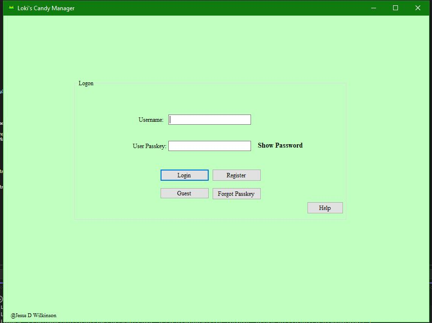
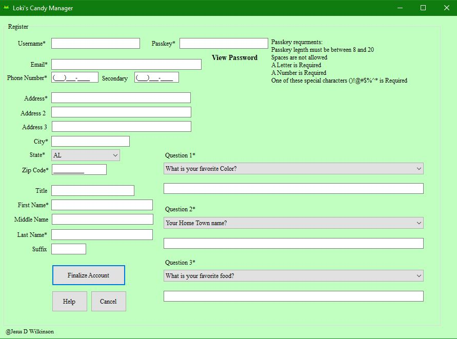
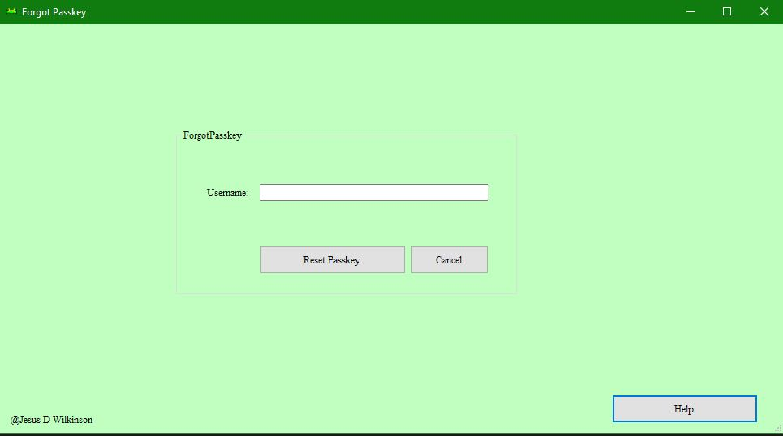
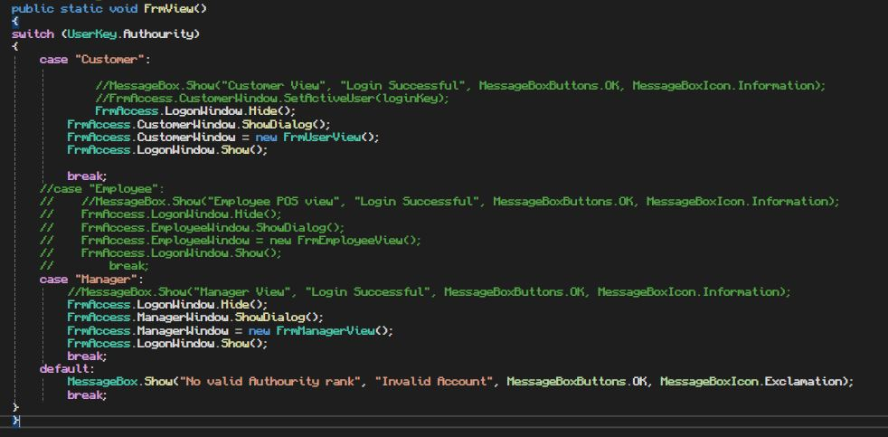
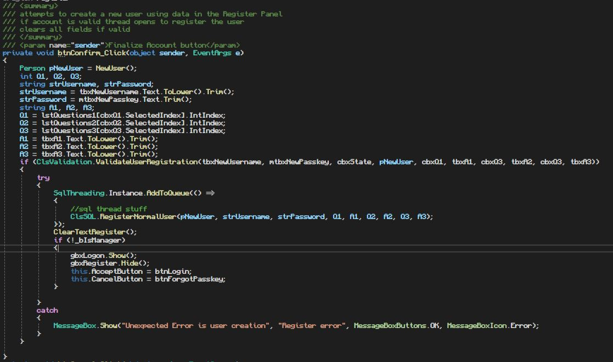
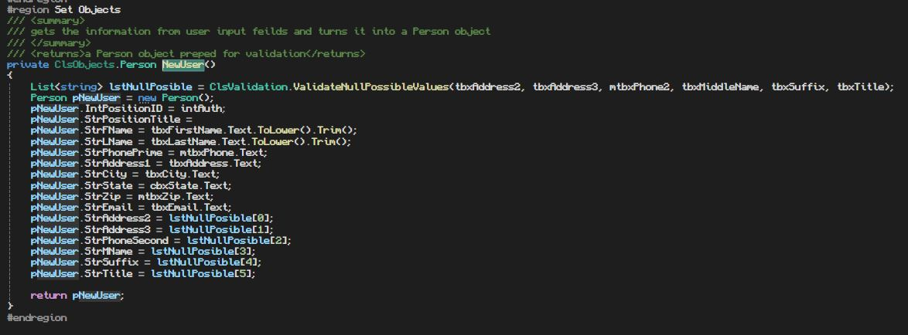
This view is used to facilitate the handeling of purcheses
History tab contains every previous purchace of a user
Favorites tab contains pre-set cart details for repeated purchases
turns a list of order details into a list of sales per order and 1
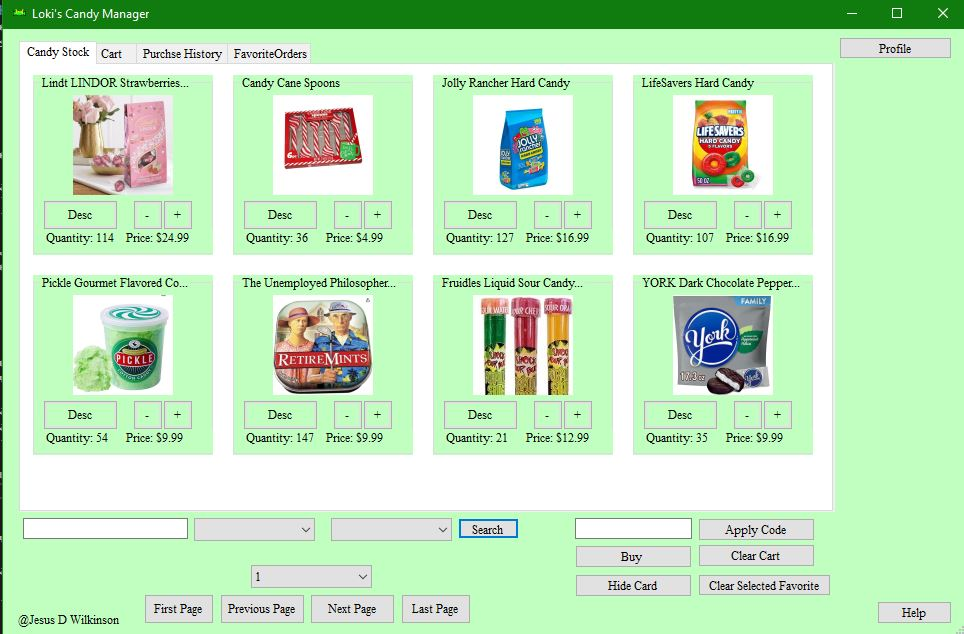
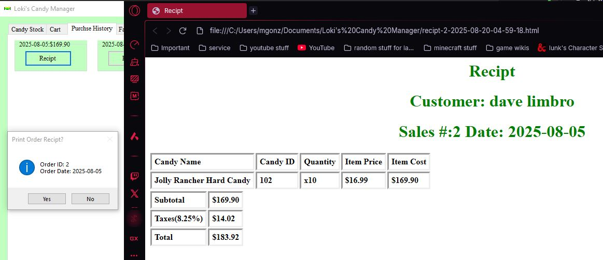
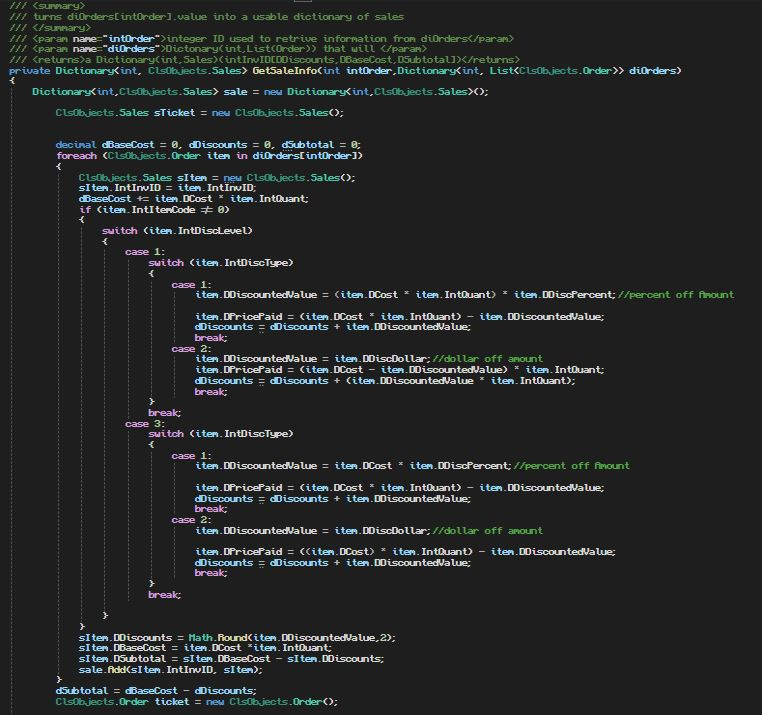
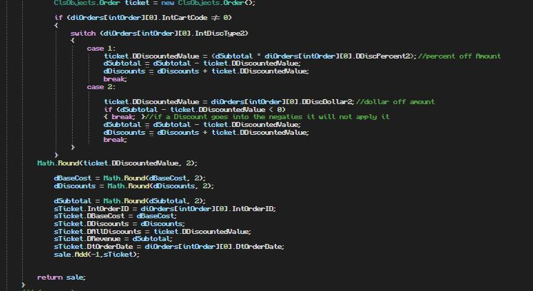
This view is used to facilitate the handeling of the database
Reports tab contains methods to generate inventory or sales reports
Person tab contains user information and allows manager the ability to act as a customer and enter the Customer view with their information
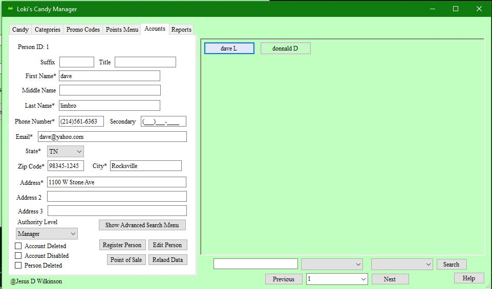
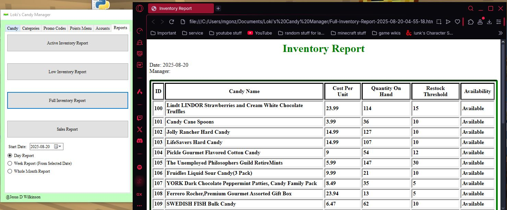
This view is used to facilitate the handeling of user information and statistics
Customize allows for user to get a border for their profile image
Personal Information allows for the user to change thier info in the database and bind a valid credit card to their account with a pin
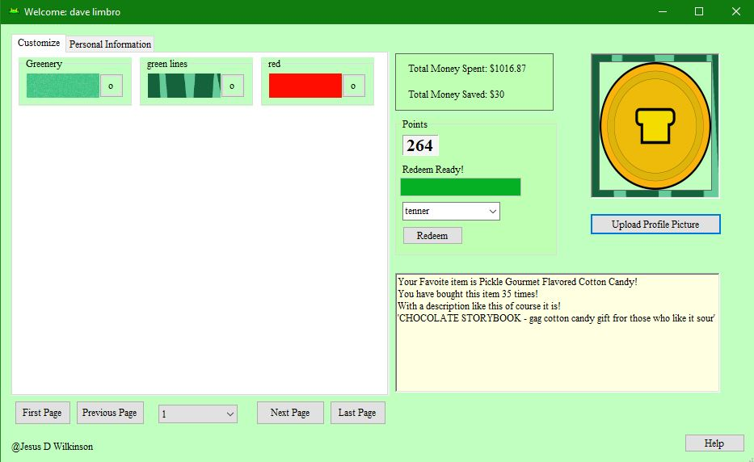
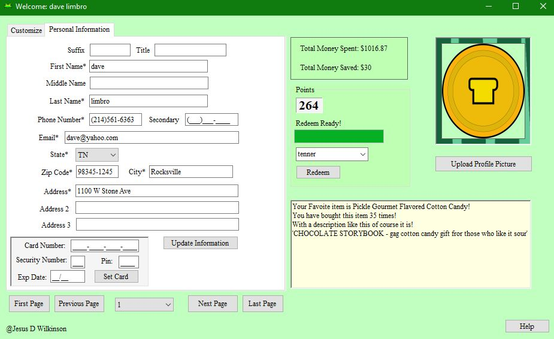
These 2 methods i worked on in this project hold some significance since they allowed me to be more flexible
instead of hard coding butons i generate buttons then bind data to them such as position data and candy data
new button functionI wanted my dedicated sql thread worker to have a simple way to add a task to the thread and invoke the main thread when ui updates are required
threading work loop